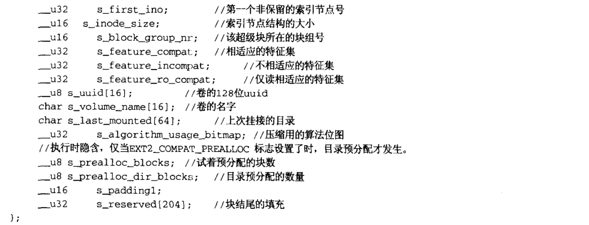

EXT2文件系统
对文件系统而言，文件仅是一系列可读写的数据块。
文件系统不需要了解数据块应该放到物理介质上位置。这些是设备驱动的任务。只要文件系统需要从包含它的块设备中读取信息或数据，它就将请求底层的设备驱动读取一个基本块大小整数倍的数据块。EXT2文件系统将它所使用的逻辑分区划分成数据块组。每个数据块组都将那些对文件系统完整性最重要的信息复制出来，同时将实际文件盒目录看做信息与数据块。
文件系统管理的是一个逻辑空间，这个逻辑空间就像一个大的数组，数组的每个元素就是文件系统操作的基本单位——逻辑块。逻辑块是从0开始编号的，而且，逻辑块是连续的，逻辑块相对的是物理块。通常，EXT2的物理块占一个或几个连续的扇区。
一般而言，只有块组0的超级块才读入内存，其他块组的超级块仅仅作为备份。在系统运行期间，要将超级块复制到内存系统缓冲区。
块位图和节点位图
在EXT2文件系统中，采用位图描述数据块和索引节点的使用情况，每个块组中占用两个块，即一个用来描述该数据块的使用情况，另一个描述该组索引节点的使用情况。这两个块分别称为数据位图块和索引节点位图块。数据位图块中的每一位表示该块组中的每一个块的使用情况，如果为0，则表示相应数据块空闲，如果是1，则表示已分配。
索引节点表
每个块组中的索引节点都存储在各自的索引节点表中，并且按索引节点号依次存储。索引节点表通常占好几个数据块，索引节点表所占的块使用时也想普通的数据块一样被调入块高速缓存。
数据结构：ext2_super_block

数据结构：ext2_super_info
结构ext2_super_info描述了EXT2文件系统特定的信息。
VFS的超级块必须兼容各种文件系统的不同的超级块结构，因此每个文件系统超级块特定的特性必须用另一个结构保存于内存中，以加快对文件的操作。
超级块的操作函数
EXT2的索引节点inode
在EXT2文件系统中每个文件与目录由惟一的inode来描述。每个数据块组的EXT2 inode被保存在inode表中，同时还有一个位图被系统用来跟踪已分配和未分配的inode。
EXT2文件系统使用索引节点来记录文件信息。每个普通文件盒目录都有惟一的索引节点与之对应，索引节点中含有文件或目录的重要信息。当你要访问一个文件或目录时，通过文件或目录名首先找到与之对应的索引节点，然后通过索引节点得到文件或目录的信息及磁盘上的具体的存储位置。
###EXT2 文件系统建立过程
在 函数init_ext2_fs注册了EXT2文件系统：
函数ext2_get_sb打开块设备，得到超级块，将这个超级块加到全局super_blocks链表中，并挂接文件系统。
函数ext2_fill_super从硬盘中读出超级块数据并填充超级块结构
文件的读写
ext2_aops结构是EXT2 文件系统中具体操作实现函数集
ext2_get_block函数是EXT2文件系统特有的，其他都是fs/buffer.c中的函数
ext2_get_block()将对文件系统的逻辑块号转换为块设备的逻辑块号。这种转化关系是由ext2_inode结构中i_block[]数组描述的i_block[]的前12项为直接索引表，第13项为间接索引块指针，第14项为二重索引块指针，第15项为三重索引块指针。当文件长度不超过12个块时，可通过直接块索引表直接定位目标块；当文件长度超过12块，并且剩余的部分不超过间接块索引数量时，就在间接块索引块中定位目标块，依次类推。
函数ext2_get_block功能是
- 计算并获取存储路径，我们知道文件数据是通过间接块的方式存储的，因此这里主要是根据数据逻辑地址计算出其存储的路径情况，并获得该路径。
- 计算需要分配的块的数量和期望的磁盘物理位置。
- 分配磁盘空间，计算出需要的磁盘空间的数量后，最后该函数调用ext2_alloc_branch来分配需要的磁盘空间，具体就是将空间管理的位图置位。
ext2_block_to_path
功能主要是根据逻辑地址计算出在深度及每一层的位置。前文我们已经知道文件数据的放置方式，结合图3以比较清楚的理解本函数的代码。这里根据数据的逻辑地址分为3种情况，分别如下：
** 不需要间接块 **： 也就是数据目的位置（以文件块大小为单位）在12以内，则说明是直接引用，不需要间接块，此时在数组的前12个元素中的一个。
** 一级间接块 **： 数据范围在一级间接块可表示的范围内，此时表示路径的数组的第一个元素是inode数组中的第12个元素，而第二个元素则是在间接块中的具体位置。比如i_block是18，此时通过直接寻址无法满足要求，因此需要一级间接块。这样，offsets中第一个元素的值是12，表示是一级间接块；offsets的第二个元素是6，因为直接索引可以表示12个数据块，因此在间接块中的分别可以存储从第13到256+12的数据范围，对于位置为18的数据在间接块的位置就是6。
** 二三级间接块 **： 以此类推，根据逻辑地址的大小可能会需要二级甚至三级间接块，依照这种算法可以计算出每一级间接块的位置。
ext2_get_branch
从物理块中读取数据到chain的buffer中
inode 操作的节点
depth 间接块的深度
offset 间接物理块的指针数组
chain 存储读取物理块的数据
ext2_alloc_branch
函数ext2_alloc_branch分配并建立一个块链表，其中参数inode表示需分配块的节点，参数num表示间接块的深度，参数offsets是一个数组，即offsets[num]，参数branch是存储链表的地方。
主要调用了2个函数，其中ext2_alloc_blocks用户分配磁盘块，本质是将管理磁盘空间的位图的对应位进行置位操作；另外一个函数sb_getblk用于从磁盘读取该块的数据，并进行初始化。
关于寻址
从上图可以看出，索引项 Blocks[13]指向两级的间接寻址块，总共最多可表示 (b/4)^2 +b/4+12个数据块，对于 1K的块大小最大可表示 64.26MB的文件。索引项 Blocks[14]指向三级的间接寻址块，总共最多可表示 (b/4)^3 +(b/4)^2 +b/4+12个数据块，对于 1K的块大小最大可表示 16.06GB的文件。
可见，这种寻址方式对于访问不超过 12个数据块的小文件是非常快的，访问文件中的任意数据只需要两次读盘操作，一次读 inode（也就是读索引项）一次读数据块。而访问大文件中的数据则需要最多五次读盘操作： inode、一级间接寻址块、二级间接寻址块、三级间接寻址块、数据块。实际上，磁盘中的 inode（索引节点高速缓存）和数据块（块高速缓存）往往已经被内核缓存了，读大文件的效率也不会太低。
日志机制
ext2和ext3的格式完全相同，只是在ext3硬盘最后面有一部分空间用来存放Journal的记录；
在ext2中，写文件到硬盘中时，先将文件写入缓存中，当缓存写满时才会写入硬盘中；
在ext3中，写文件到硬盘中时，先将文件写入缓存中，待缓存写满时系统先通知Journal，再将文件写入硬盘，完成后再通知Journal，资料已完成写入工作；
在ext3中，也就是有Journal机制里，系统开机时检查Journal的内容，来查看是否有错误产生，这样就加快了开机速度；
在向文件系统中的文件写入数据的时候，会先产生一个journal log日志，这个journal log日志是生成在内存中的。系统中有一个后台进程kjournald2，会定时查看这些journal log日志对应的磁盘操作是否已经将数据块写入磁盘的文件系统中了，如果写入了的话，内存中的这个journal log日志就可以抛弃了，否则，线程会将该日志转移到磁盘上的checkpointlist里。
对于磁盘上的checkpointlist来说其中的journal log日志也不能一直存在，否则是非常占用空间的，因此，有一套checkpoint机制，用于清楚checkpointlist中的journal log日志，具体来说是当有新的journal log需要写入checkpointlist之前，检查checkpointlist中是否有足够的空间，如果没有的话，就调用该checkpoint机制，checkpoint机制检查checkpointlist中的journal log是否已经将数据写入磁盘的文件系统，写入的话则直接删除该log，没有的话则写入和删除。